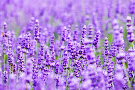

ラベンダー

穏やかで心地よい、万能なフローラルハーブ
ヨーロッパの山地に生育しているハーブで、精油はリラックス効果が高く、安眠効果があることで有名です。
作用が穏やかで用途が広く、アロマテラピーでもっともよく使われるもののひとつです。
古代ローマでは、傷の手当てに、このハーブを浴槽に入れて沐浴していました。
また、防虫効果があることも古くから知られており、ヨーロッパでは肌着入れにラベンダーの花穂の入ったサシェを入れて、
虫よけにしていました。
香りの特徴：
爽やかな酸味と、クリアで軽さのあるフローラルな香り
心への効能
リラックスしたいとき、安眠したいときに
自律神経のバランスを整える作用があり、不安やストレスを抱えた心を癒して、深くリラックスさせるのに有効です。
また、脳内物質のセロトニンの分泌を促すことにより、睡眠ホルモンの分泌も促進されるため、不眠の解消にも優れた効果を発揮します。
身体への効能
頭痛・筋肉痛・月経痛などに
リラックス効果の高いラベンダーです。沈静、沈痛作用があるので、ストレスが溜まった時や不安に陥った時、なかなか寝付けない時などには、とても効果があります。
肌への効能
やけどや傷の手当、湿疹や皮膚炎にも
抗炎症作用や殺菌・消毒作用、癒傷作用
お勧めブレンド
安眠には、心の疲れを癒すオレンジ・スイートやカモミール・ローマンとのブレンドがおすすめ。
ベルガモットとのブレンドは、パニックやヒステリーを鎮めるのに良い。
注意事項
妊娠初期は芳香浴以外の使用を避けること。低血圧の人は催眠作用が働きすぎることがあるので、
車の運転など、集中力を要する作業の前は使用しないよう注意を。